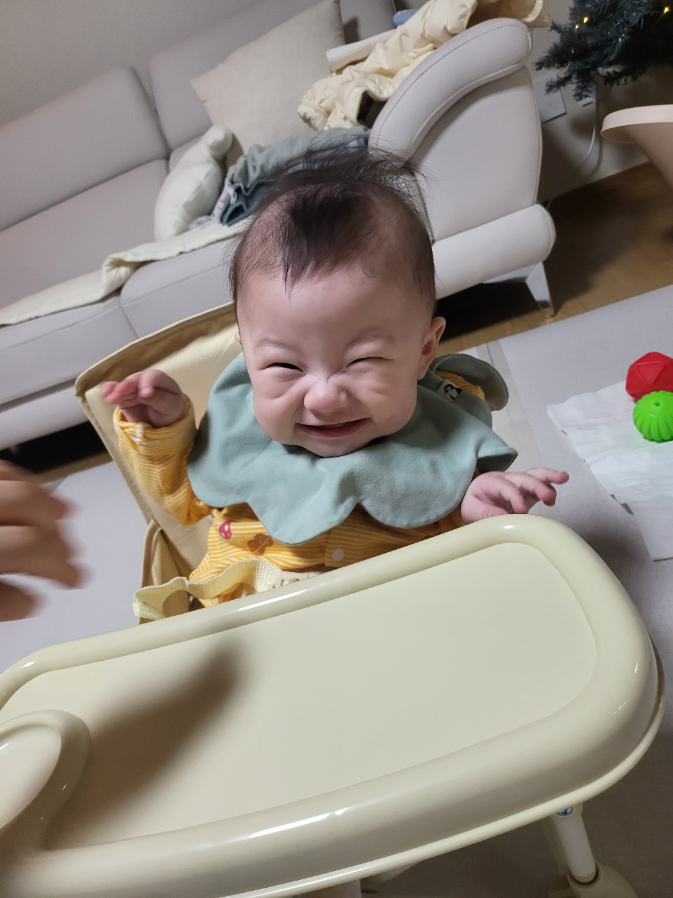

- 첫째 미소
- 둘째
- 셋째
최미소
최미소 탄생 직후 신체 검사하는 영상
이 영상을 통해 극강의 귀여움과 그녀의 당찬 성격을 알 수 있음.
영상 속에서 미소의 신체 검사를 머리부터 발끝까지 진행하며, 손톱과 발톱 그리고 귀까지 세세하게 검사하였음.
하지만, 최미소는 귀찮다며 하지말라고 엄청난 크기의 울음으로 표현하였음.
최미소 웃는 모습

이 사진을 본 외할머니는 미소 웃는 모습이 하트같다고 한다.
눈웃음과 인디언보조개가 아주 매력적임.
이 페이지는 html을 기반으로 작성되었음.